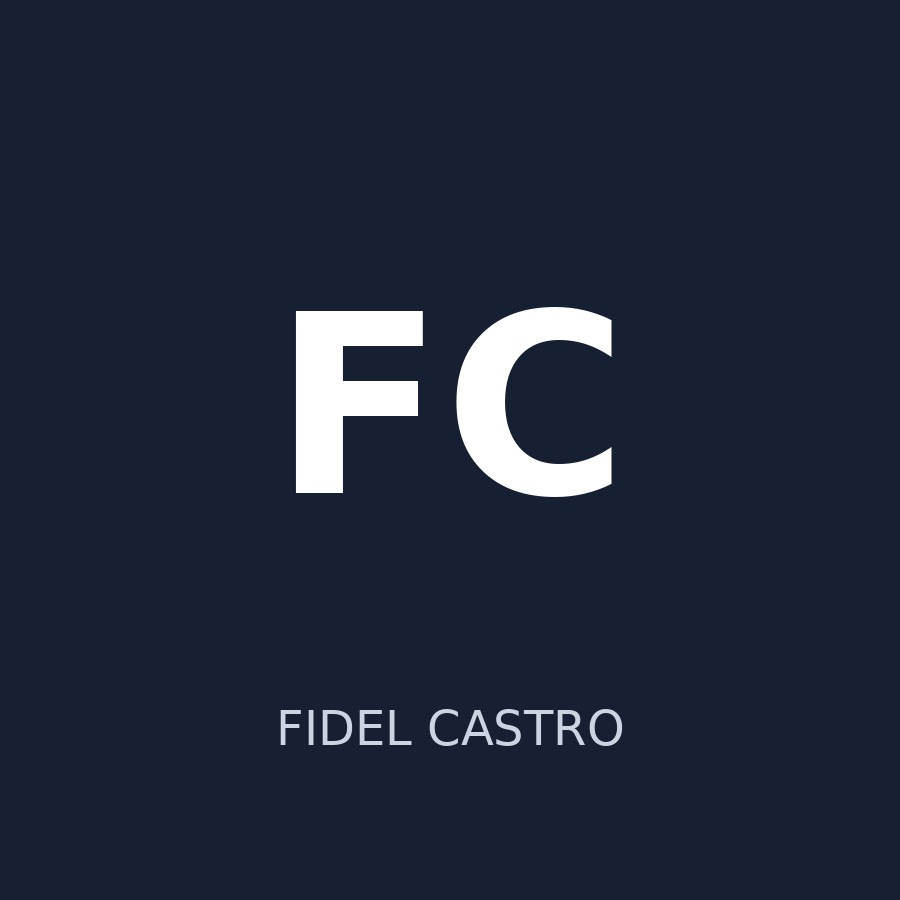

📊
Data & Analytics
Statistics, data analysis, interpretation, research, problem solving and data visualization.
DATA & TECHNOLOGY • LEADERSHIP • COMMUNITY
Data and technology enthusiast, community leader and student governance professional passionate about analytical thinking, responsible leadership and practical solutions.

Replace this placeholder with your professional photo.
ABOUT ME
I am Fidel Castro, a data and technology enthusiast with a strong interest in leadership, student governance and community development.
My interests sit at the intersection of data, information technology, research, leadership and youth engagement. I believe knowledge becomes more valuable when it is transformed into practical solutions that serve people and communities.
I continuously develop my technical and professional skills while seeking opportunities to learn, collaborate and contribute to meaningful projects.
SKILLS & CAPABILITIES
Statistics, data analysis, interpretation, research, problem solving and data visualization.
Information technology, digital tools, web technologies, GitHub and basic web development.
Communication, teamwork, leadership, coordination, documentation and public engagement.
Youth engagement, community initiatives, stakeholder engagement and responsible leadership.
My leadership journey spans primary school, secondary school, university and community development, with experience in student governance, mentorship, communication, electoral administration, youth representation and community leadership.
Served as Environment Prefect in Class Seven, helping promote cleanliness, environmental responsibility, proper waste management and a positive school environment.
Served as School Governor from Form One through Form Three, representing students, supporting school leadership, promoting responsibility and discipline, and contributing to student welfare and school activities.
Served as Catholic Male Assembly Leader during first year, providing leadership among fellow students, coordinating activities, encouraging participation and supporting fellowship and service.
Served as New Convert Leader of the Christian Union from second year through fourth year, providing mentorship, guidance, encouragement and support to new converts as they integrated into the Christian Union community.
Served as Treasurer of the NET TRUST MINISTRIES third-year class executive, supporting financial accountability, responsible resource management, organization and coordination of class activities.
Served as Public Relations Officer of the school during third year, supporting communication, information sharing, student engagement and representation of student interests.
Currently serving as Secretary of the Independent Electoral Commission of the Siaya County College University Students Association (SICOCUSA), supporting electoral administration, documentation, communication, coordination, transparency and accountability in student electoral processes.
Serving as a leader within the Siaya Youth Assembly, contributing to youth representation, governance, policy engagement, civic participation and community development.
Serving as Chairperson of the Yimbo Youth Forum, providing community leadership, coordinating youth-focused initiatives, mobilizing young people, promoting community development and actively working towards registering the forum as a Community-Based Organization (CBO).
My leadership experience has developed progressively from environmental responsibility in primary school, through student governance in high school and university, to electoral governance, youth representation and community leadership. These experiences have strengthened my communication, coordination, accountability, mentorship, public engagement and service-oriented leadership.
Currently pursuing graduate studies focusing on advanced artificial intelligence, machine learning frameworks, data models, and intelligent systems.
Completed undergraduate studies building a strong academic foundation in mathematics, statistics, information technology, data analysis, and problem-solving.
PROJECTS & INTERESTS
A responsive professional portfolio deployed with GitHub Pages and built around a clean, mobile-first experience.
HTML • CSS • JavaScript • GitHub PagesAcademic and practical work involving data collection, analysis, interpretation and presentation.
Statistics • Research • Data AnalysisParticipation in youth-focused initiatives that encourage meaningful engagement and practical community solutions.
Youth Development • Leadership • CommunityCAREER DIRECTION
I am interested in opportunities involving data science, data analysis, information technology, statistics, research, digital transformation, technology projects, leadership and community development.
LET'S CONNECT
For professional opportunities, collaborations, projects, research and community initiatives, feel free to reach out.